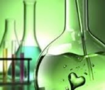

Overview
Our aim is to use a variety of learning approaches that make our pupils more independent learners. We want them to be resilient, resourceful and reflective, and hence more able to access the skills based Science curriculum.
During years 7, 8 and 9 pupils will sometimes work in groups, sometimes in pairs and sometimes independently to develop their understanding of Science.
Assessment Procedures
Pupils' progress is continually assessed throughout key stage 3 by monitoring their performance in many science investigations. These will generally be completed in class.
Pupils will also complete several end of theme/topic tests.
Homework/Own Learning
Homework is set to support classroom learning and to help meet learning objectives.
Extended project work may be set to cover several "weeks" of homework where appropriate.
Marking Policy
In key stage 3 Science the emphasis of our marking is to provide pupils with constructive feedback, which will help them progress as learners.
During years 7, 8 and 9 pupils will complete many investigation-based tasks. These will be marked in detail by their teachers, providing pupils with information about the skills they have demonstrated and how to develop their investigative skills further. Pupils will also make use of mark schemes and set themselves targets for improvement.
Year 7
In year 7, learning takes place within four themes.
Year 8
In year 8, learning takes place within three more themes with each theme lasting about a term. Lessons are split between the physical and biological aspects of the themes.
Year 9
In year 9, learning takes place within three more themes (Faster, Stronger, Higher) and is the first year in which pupils have separate lessons with specialist teachers for Biology, Chemistry and Physics.
In Biology, the topics are all based around human Biology. They include digestion (rat dissection), puberty, reproduction, pregnancy and circulation.
In Chemistry, pupils will cover the following topics: rates of reaction (collision theory), acids, alkalis and indicators, states of matter, elements, mixtures and compounds, the periodic table and metals and the reactivity series.
In Physics, pupils will cover the following topics: speed, forces, work & power, sound, light, space and energy.
